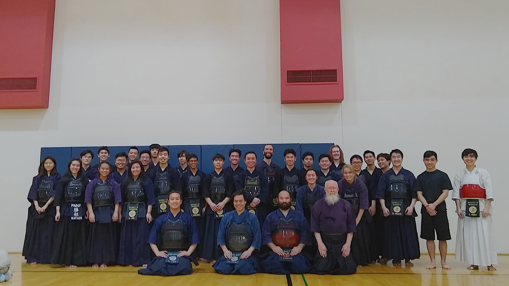

Kendo Prom 2019
We would like to invite all of you to the 2019 Kendo Prom! This year, the theme is going to be “Masquerade”, so come nicely dressed, bring your best masks, and be ready to have fun!
- Time: Sunday, February 10th, from 6:30 pm to 9:30 pm
- Location: the Waterfront Activities Center Great Room: 3710 Montlake Blvd, Seattle, Washington 98195
- Tickets: $20 per person and $35 per couple. Students (high school or college): $10 per person and $15 per couple. You can buy tickets at the prom using credit cards or cash.
-
Raffle prizes:
- Blue Nile Jewelry ($300)
- UW Bookstore $50 Gift Card ($50)
- Crowd Cow ($200)
- UW Huskies swag Gift Basket (~$275)
- Kippon T-shirt ($30 each)
- Star Wars chopsticks (~$20)
- Google Home Mini ($50)
- X-box 360 games (~ $25 each)
- X-box One games (~ $25 each)
- Personal Chauffeur from your parked car to the IMA at UW taikai ( Can be used once but expired in 3 year) ($ 1000000)
- Eat like a king/queen with your own personal meal of your choice and fancy utensils at UW taikai (Please keep the price and location reasonable, within UW parameters) ( Can be used once but expired in 3 year)
- Design the poster of UW taikai banner (We will print a taikai banner based on the picture you give us) ($ Infinity)
- Maruyama BIO shinai ($100)
- Gundam Epyon Mobile Suite ($40)
- Old School Frozen Custard ($50)
- More…
All of the proceeds will go towards the UWKC team going to Boston for the Harvard Intercollegiate taikai so we would very much appreciate your support in this cause!
Along with the raffle, there will be free food, drinks, music, board games, a Nintendo Switch! We will have a Super Smash Bros competition starts at 8 pm. There will be prizes for first place and second place holder! Please participate if you want to beat up your friends outside kendo!